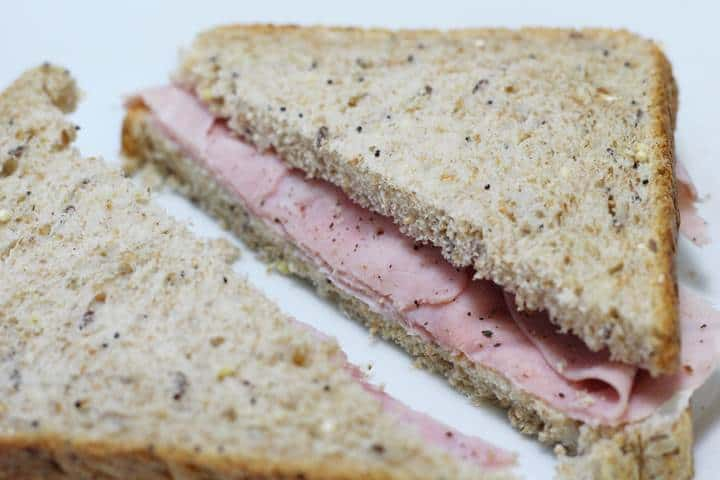

Return Home
Ham Sandwich

This is a classic recipe, just like the ones your
mom used to make. On a cold snowy day or a bright
summer morning, this simple ham sandwich will be sure
to bring a nostalgic, wistful feeling to your day.
As simple to prepare as its simplistic image, this
recipe is designed so that even the most culinarily
inept couldn't screw it up! Relax! Enjoy!
Ingredients
- Bread
- Slice ham
- Mayo (*optional*)
- Mustard (Brown or yellow) (*optional)
Steps
- First, take the slices of bread and put them on a plate or cutting board.
- Next, if you will use mayo or mustard on your sandwich, spread the condiment in a thin later (to taste) on the slives of bread.
- After that, place slices of ham onto the open-faced sandwich (to taste).
- Finally, unite the two sides of the sandwich into on completed sandwich.
- Optional: Slice the sandwich from one corner to the opposite corner to make sandwich triangles, the superior way to consume a sandwich.